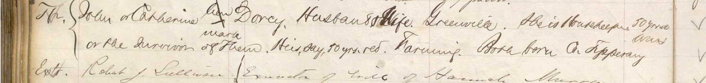

Lead only: John and Catherine Dorcy open a savings account, Old Stone Bank, 1872 — both born County Tipperary
Providence, Rhode Island, U.S. Old Stone Bank Records, 1844–1924: Signature Book vol. 7, 1870–73 (Ancestry collection 62959, record 195317, image osbsb_07_1870-73_348)

The original record, as it appears in the register or index.
What this document is
An original record.
What it says
Old Stone Bank (Providence Institution for Savings) signature book, vol. 7, 1870–1873, May 28, 1872: “John or Catherine (her mark) Dorcy. Husband & wife. Greenville. She is housekeeper, 50 yrs old, or the survivor of them. He is day, 50 yrs old. Farming. Both born Co. Tipperary.” Catherine signed with her mark, as the 1875 census says Catherine Darcy could not write. NOT PROVEN to be Constance’s great-great-grandparents: the ages (50) do not match the 1875 census (40 and 38), and Greenville (Smithfield) is not Ward 5. Kept as a lead for the Irish county.
Place
Providence, Rhode Island
How it was read
lead